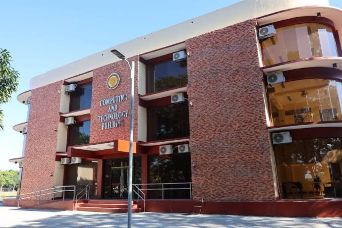
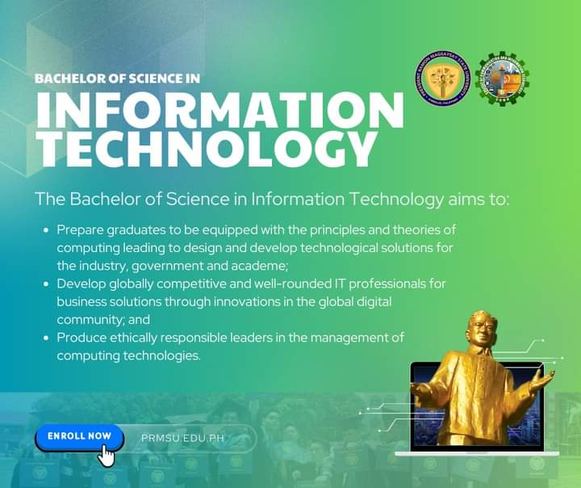
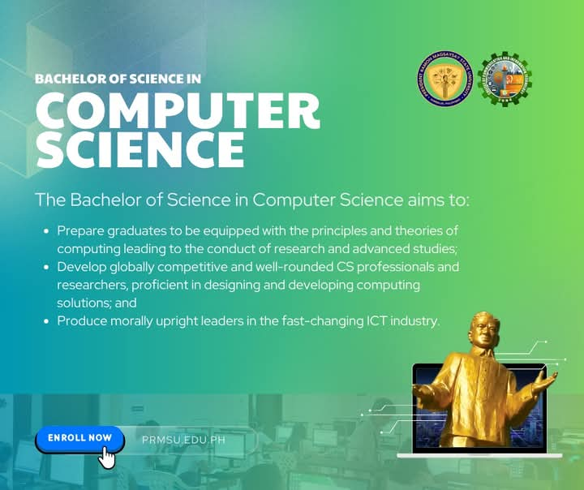
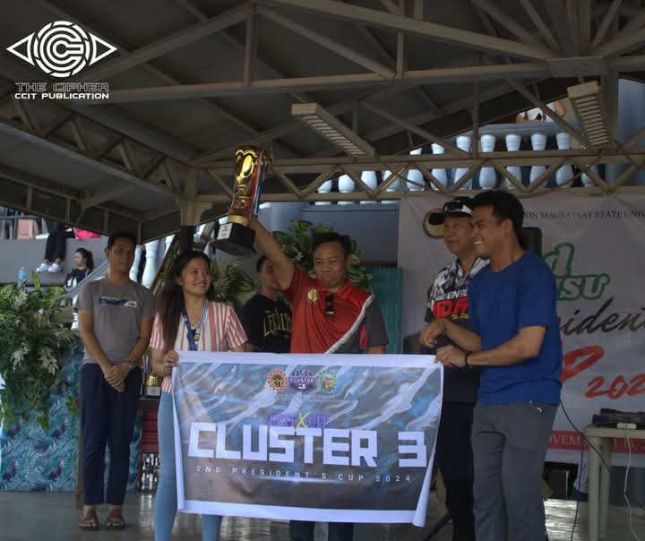

CCIT DEPARTMENT
Welcome to the College of Computing and Information Technology (CCIT) at PRMSU.
Here you will find information about our programs, faculty, and research initiatives.
OFERRED PROGRAMS
 EVENTS

CAASUC Culture and Arts Festival 2024
Congratulations to the delegation of the President Ramon Magsaysay State University for achieving an outstanding feat as the the 1st Runner-Up in the recently-concluded CAASUC Culture and the Arts Festival 2024 held at Bulacan State University, City of Malolos, Bulacan from November 26-29, 2024. Your hard work, creativity, and ingenuity have brought immense pride and honor to the PRMSU community. This remarkable achievement reflects not only your individual and collective excellence but also the University's commitment to the promotion of culture and the arts.

Cluster 3 Breaks Through at PRMSU 2nd President's Cup 2024
Cluster 3, a powerhouse combination of College of Industrial Technology and College of Communication and Information Technology, made an impressive mark at the recently concluded PRMSU President’s Cups, securing 17 Gold, 17 Silver, and 12 Bronze medals. They clinched 1st place among 10 clusters, while Cluster 1 took the overall championship, and Cluster 2 secured 2nd.
The event, held from November 11-13, celebrated the exceptional talent and unwavering dedication of Ramonians, showcasing their strength and skill across different sports.